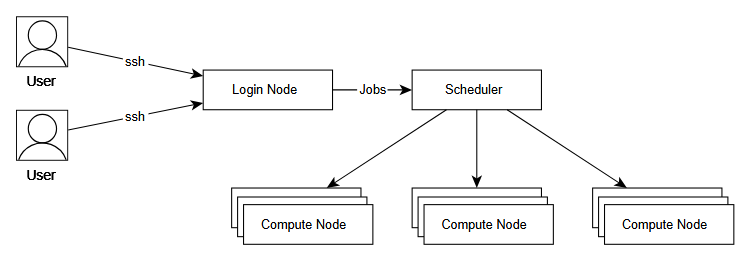

103.集群作业提交
登录后进入的是登录节点，并不能直接运行程序，需要通过作业调度系统，将作业提交到计算节点上执行；
运行作业的方式有两种： 一种是将计算过程写成脚本，通过sbatch指令提交到计算节点执行； 另一种是通过salloc申请到计算节点，再ssh连接到计算节点进行计算； 通过sinfo查看计算节点空闲状态； 可以通过squeue查看已经提交作业的排队情况； 通过scontrol show job 和sacct查询作业的相关信息； 通过scancel取消已经提交的作业。
sbatch 将整个计算过程，写到脚本中，通过sbatch指令提交到计算节点上执行； 先介绍一个简单的例子，随后介绍例子中涉及的参数，接着介绍sbatch其他一些常见参数，最后再介绍GPU和MPI跨节点作业案例。 首先是一个简单的例子； 假设我们的计算过程为：在计算节点上运行hostname指令，那么就可以这么编写作业脚本； #!/bin/bash #SBATCH -o job.%j.out #SBATCH -p C032M0128G #SBATCH –qos=low #SBATCH -J myFirstJob #SBATCH –nodes=1 #SBATCH –ntasks-per-node=1
hostname 假设上面作业脚本的文件名为job.sh，通过以下命令提交： sbatch job.sh 随后我们介绍脚本中涉及的参数； -o job.%j.out # 脚本执行的输出将被保存在当job.%j.out文件下，%j表示作业号; -p C032M0128G # 作业提交的指定分区为C032M0128G； –qos=low # 指定作业的QOS为low; -J myFirstJob # 作业在调度系统中的作业名为myFirstJob; –nodes=1 # 申请节点数为1,如果作业不能跨节点(MPI)运行, 申请的节点数应不超过1; –ntasks-per-node=1 # 每个节点上运行一个任务，默认一情况下也可理解为每个节点使用一个核心，如果程序不支持多线程(如openmp)，这个数不应该超过1； 其中： -p 指定作业的运行分区，提交作业时必须指定分区，每个分区有不同的属性，如未名一号上C032M0128G分区，每个节点核心数为32，内存为128G，通过以下命令可以查看对应集群可用分区，也可以通过sinfo查看分区的空闲状态； sacctmgr show ass user=`whoami` format=part |uniq –qos 指定作业的服务质量 ，不同qos，作业排队的优先级和收费也不同，通过以下命令可以查询 每个用户在每个分区下可用的qos； sacctmgr show ass user=`whoami` format=user,part,qos 通过以上命令可以查看不同qos的作业优先级、作业允许最大运行时间、每个用户最多可提交作业数、最多可用核心数。 除此之外，还有一些常见的参数； –help # 显示帮助信息； -A <account> # 指定计费账户； -D, –chdir=<directory> # 指定工作目录； –get-user-env # 获取当前的环境变量； –gres=<list> # 使用gpu这类资源，如申请两块gpu则–gres=gpu:2 -J, –job-name=<jobname> # 指定该作业的作业名； –mail-type=<type> # 指定状态发生时，发送邮件通知，有效种类为（NONE, BEGIN, END, FAIL, REQUEUE, ALL）； –mail-user=<user> # 发送给指定邮箱； -n, –ntasks=<number> # sbatch并不会执行任务，当需要申请相应的资源来运行脚本，默认情况下一个任务一个核心，–cpus-per-task参数可以修改该默认值； -c, –cpus-per-task=<ncpus> # 每个任务所需要的核心数，默认为1； –ntasks-per-node=<ntasks> # 每个节点的任务数，–ntasks参数的优先级高于该参数，如果使用–ntasks这个参数，那么将会变为每个节点最多运行的任务数； -o, –output=<filename pattern> # 输出文件，作业脚本中的输出将会输出到该文件； -p, –partition=<partition_names> # 将作业提交到对应分区； -q, –qos=<qos> # 指定QOS； -t, –time=<time> # 允许作业运行的最大时间，目前未名一号和生科一号为5天，教学一号为两天； -w, –nodelist=<node name list> # 指定申请的节点； -x, –exclude=<node name list> # 排除指定的节点； 其中-A指定计费账户，每个上机账号至少关联一个缴费账户(项目负责人持有)，用于作业计费，通常情况下，提交作业不需要指定账户，通过以下命令可以查询上机账号所关联的账户，如果一个上机账号对应了多个缴费账户，那么可以在提交作业时指定缴费账户； sacctmgr show ass user=`whoami` format=account%15 |uniq 接下来是一个GPU作业的例子; 假设我们想要申请一块GPU卡，并通过指令nvidia-smi来查看申请到GPU卡的信息，那么可以这么编写作业脚本； #!/bin/bash #SBATCH -o job.%j.out #SBATCH –partition=GPU #SBATCH –qos=low #SBATCH -J myFirstGPUJob #SBATCH –nodes=1 #SBATCH –ntasks-per-node=6 #SBATCH –gres=gpu:1
nvidia-smi 脚本中的一些参数说明如下 #SBATCH –partition=GPU # 作业提交的指定分区为GPU; #SBATCH –gres=gpu:1 # 每个节点上申请一块GPU卡 最后是一个跨节点多核心的例子； 假设我们想用两个节点，每个节点32个核心来运行vasp，那么可以这么编写作业脚本； #!/bin/bash #SBATCH -o job.%j.out #SBATCH –partition=C032M0128G #SBATCH –qos=low #SBATCH -J myFirstMPIJob #SBATCH –nodes=2 #SBATCH –ntasks-per-node=32
# 导入MPI运行环境 module load intel/2017.1
# 导入MPI应用程序 module load vasp/5.4.4-intel-2017.1
# 生成 machinefile srun hostname -s | sort -n >slurm.hosts
# 执行MPI并行计算程序 mpirun -n 64 -machinefile slurm.hosts vasp_std > log salloc 申请计算节点，然后登录到申请到的计算节点上运行指令； salloc的参数与sbatch相同，该部分先介绍一个简单的使用案例；随后介绍一个GPU的使用案例；最后介绍一个跨节点使用案例； 首先是一个简单的例子； 申请一个节点6个核心，并跳转到该节点上运行程序； salloc -p C032M0128G -N1 -n6 -q low -t 2:00:00 # salloc 申请成功后会返回申请到的节点和作业ID等信息，假设申请到的是a4u03n07节点，作业ID为1078858 ssh a4u03n07 # 直接登录到刚刚申请到的节点a4u03n07调式作业 scancel 1078858 # 计算资源使用完后取消作业 squeue -j 1078858 # 查看作业是否还在运行，确保作业已经退出，避免产生不必要的费用 随后是一个GPU节点的使用案例； 申请一个GPU节点，6个核心，1块GPU卡，并跳转到节点上运行程序； salloc -p GPU -N1 -n6 –gres=gpu:1 -q low -t 24:00:00 # 假设申请成功后返回的作业号为1078858，申请到的节点是gpu05 ssh gpu05 # 登录到gpu05上调式作业 scancel 1078858 # 计算结束后结束任务 squeue -j 1078858 # 确保作业已经退出 最后介绍一个跨节点使用案例； 申请两个节点，每个节点12个核心 salloc -p C032M0128G -N2 –ntasks-per-node=12 -q low -t 2:00:00 # salloc 申请成功后会返回申请到的节点和作业ID等信息，假设申请到的是a8u03n[05-06]节点，作业ID为1078858 # 这里申请两个节点，每个节点12个进程，每个进程一个核心
# 根据需求导入MPI环境 module load intel/2018.0
# 根据以下命令生成MPI需要的machine file srun hostname -s | sort -n > slurm.hosts
mpirun -np 24 -machinefile slurm.hosts hostname
# 结束后退出或者结束任务 scancel 1078858 sinfo 通过sinfo可查询各分区节点的空闲状态； 首先介绍通过sinfo查看所有分区空闲状态；随后介绍通过sinfo查看指定分区的空闲状态；最后介绍sinfo的常用参数。 首先介绍通过sinfo查看所有分区的空闲状态； 显示集群的所有分区节点的空闲状态，idel为空闲，mix为节点部分核心可以使用，alloc为已被占用; sinfo 随后介绍通过sinfo查看指定分区的空闲状态； 指定显示C032M0128G和C032M0256G分区的空闲状态； sinfo -p C032M0128G,C032M0256G 最后是sinfo的一些常用参数。 –help # 显示sinfo命令的使用帮助信息； -d # 查看集群中没有响应的节点； -i <seconds> # 每隔相应的秒数，对输出的分区节点信息进行刷新 -n <name_list> # 显示指定节点的信息，如果指定多个节点的话用逗号隔开； -N # 按每个节点一行的格式来显示信息； -p # <partition> 显示指定分区的信息，如果指定多个分区的话用逗号隔开； -r # 只显示响应的节点； -R # 显示节点不正常工作的原因； 按照指定格式输出； -o #<output_format> 显示指定的输出信息，指定的方式为%[[.]size]type，“.”表示右对齐,不加的话表示左对齐；size表示输出项的显示长度；type为需要显示的信息。可以指定显示的常见信息如下: %a 是否可用状态 %A 以”allocated/idle”的格式来显示节点数，不要和”%t” or “%T”一起使用 %c 节点的核心数 %C “allocated/idle/other/total”格式显示核心总数 %D 节点总数 %E 节点不可用的原因 %m 每个节点的内存大小（单位为M） %N 节点名 %O CPU负载 %P 分区名,作业默认分区带“*” %r 只有root可以提交作业（yes/no） %R 分区名 %t 节点状态（紧凑形式） %T 节点的状态（扩展形式） 例：sinfo -o “%.15P %.5a %.10l %.6D %.6t %N” squeue 查看提交作业的排队情况； 这里介绍了几个使用案例，首先是显示队列中所有的作业；随后介绍如何显示队列中自己的作业；接着介绍如何按照自己的格式要求显示作业信息；最后介绍squeue的常见参数。 首先是显示队列中所有的作业； squeue 默认情况下squeue输出的内容如下，分别是作业号，分区，作业名，用户，作业状态，运行时间，节点数量，运行节点(如果还在排队则显示排队原因)
JOBID PARTITION NAME USER ST TIME NODES NODELIST(REASON)
随后介绍如何在队列中显示自己的作业； # 注意whoami前后不是单引号 squeue -u whoami 接着介绍如何按照自己的格式要求显示队列信息； squeue -o “%.18i %.9P %.12j %.12u %.12T %.12M %.16l %.6D %R” -u $USER 执行以下操作： echo “alias sq=’squeue -o "%.18i %.9P %.12j %.12u %.12T %.12M %.16l %.6D %R" -u $USER’” >> ~/.bashrc 最后介绍squeue的常见参数； –help # 显示squeue命令的使用帮助信息； -A <account_list> # 显示指定账户下所有用户的作业，如果是多个账户的话用逗号隔开； -i <seconds> # 每隔相应的秒数，对输出的作业信息进行刷新 -j <job_id_list> # 显示指定作业号的作业信息，如果是多个作业号的话用逗号隔开； -n <name_list> # 显示指定节点上的作业信息，如果指定多个节点的话用逗号隔开； -t <state_list> # 显示指定状态的作业信息，如果指定多个状态的话用逗号隔开； -u <user_list> # 显示指定用户的作业信息，如果是多个用户的话用逗号隔开； -w <hostlist> # 显示指定节点上运行的作业，如果是多个节点的话用逗号隔开； 按照指定输出格式输出: -o <output_format> 显示指定的输出信息，指定的方式为%[[.]size]type，size表示输出项的显示长度，type为需要显示的信息。可以指定显示的常见信息如下； %a 账户信息 %C 核心数 %D 节点数 %i 作业ID %j 作业名 %l 作业时限 %P 分区 %q 优先级 %R 状态PD作业显示原因，状态R的作业显示节点 %T 状态 %u 用户 %M 已运行时间 # 例:squeue -o “%.18i %.9P %.12j %.12u %.12T %.12M %.16l %.6D %R” sacct查看作业信息 通过sacct和scontrol show job显示作业信息； 先介绍通过scontrol show job显示作业信息；随后介绍通过sacct显示作业信息；最后介绍通过saact按指定格式输出作业信息。 首先介绍通过scontrol show job显示作业信息； scontrol show job 只能显示正在运行或者刚结束没多久的作业信息； # 查看作业7454119的详细信息 scontrol show job 7454119 随后介绍通过sacct显示作业信息； 通过sacct查询已经结束作业的相关信息，如下所示： sacct -j 7454119 输出内容会包括，作业号，作业名，分区，计费账户，申请的CPU数量，状态，结束代码 JobID JobName Partition Account AllocCPUS State ExitCode 最后介绍如何通过sacct按照指定格式输出作业信息； 入下所示，指定输出内容为：作业号，作业名，分区，运行节点，申请核数，状态，作业结束时间； format=jobid,jobname,partition,nodelist,alloccpus,state,end sacct –format=$format -j 7454119 scancel 取消队列中已提交的作业； 介绍几个使用使用案例，分别是，取消指定作业、取消自己上机账号上所有作业、取消自己上机账号上所有状态为PENDING的作业，最后介绍scancel常见的参数。 取消指定作业； # 取消作业ID为123的作业 scancel 123 取消自己上机上号上所有作业； # 注意whoami前后不是单引号 scancel -u whoami 取消自己上机账号上所有状态为PENDING的作业； scancel -t PENDING -u whoami scancel常见参数; –help # 显示scancel命令的使用帮助信息； -A <account> # 取消指定账户的作业，如果没有指定job_id,将取消所有； -n <job_name> # 取消指定作业名的作业； -p <partition_name> # 取消指定分区的作业； -q <qos> # 取消指定qos的作业； -t <job_state_name> # 取消指定作态的作业，”PENDING”, “RUNNING” 或 “SUSPENDED”； -u <user_name> # 取消指定用户下的作业；